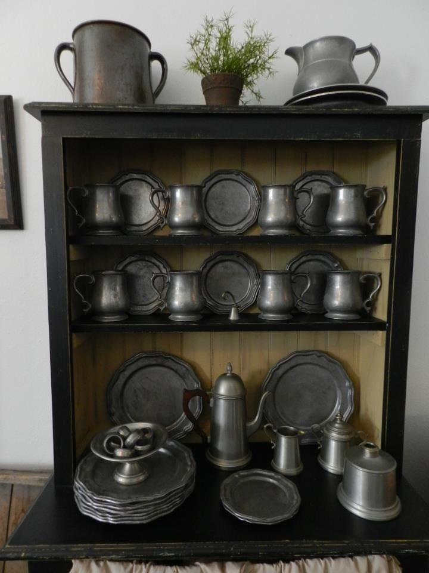

Pewtery Barn
The Pewtery Barn specializes in Antique Pewter.
Browse our store and you will find a selection of fine:
We at the Pewtery Barn recognize that in these times of economic uncertainty and radically fluctuating savings and investment dollars that everyone is more cautious with their disposable income and collecting dollars. Although unadvertised, we always have been willing to work with any customers on mutually agreed upon lay-away plans. This note is just to say if you see an item that you like but are being cautious with your collecting budget, feel free to ask about a confidential lay-away plan. And as always thank you for your interest in our website and fine early Antique Pewter. We appreciate your business.
For general questions or comments about this site email antiquepewtershop@antiquepewtershop.com
Anyone with an interest in collecting Early American Pewter may consider joining the Pewter Collectors' Club of America (PCCA) Visit the PCCA web site for a wealth of information on Early American Pewter including a comprehensive Glossary of Terms and the most complete bibliography of reference books and catalogs on Early American Pewter.
[Notes] Not included in the web page itself. The listing of different selections of pewter should be in an unordered or an ordered list. Use good design judgment with the rest of the site. Be sure to link to the PCCA web site listed below.
is PCCA Web Site address http://www.pewtercollectorsclub.org/